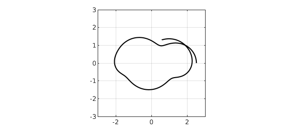
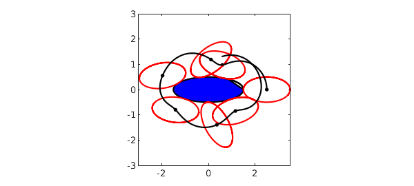
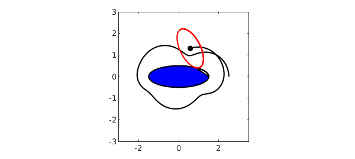

Here's a problem from Oxford's Numerical Analysis Group Problem Solving Squad in October 2011. A $2\times1$ ellipse is lined up touching a $3\times1$ ellipse tip-to-tip, and then the little ellipse rolls around the big one with boundaries touching and not slipping. How long is the trajectory of the center of the little ellipse from the starting point to when it completes a full 360-degree revolution?
For convenience, since the geometry is 2D, let's use complex variables $z_1(t)$ and $z_2(t)$ to track the contact points on the two ellipse boundaries as a function of time $t$, assuming motion at speed $1$. It is convenient to let $\theta_1(t)$ be the argument of $z_1(t)$ if it is scaled down to the unit circle: $$ z_1 = \frac12 L_1 \cos\theta_1 + \frac12 i \sin\theta_1 . $$
That is, $$ \theta_1 = \arctan \left( \frac{\mathrm{imag}(z_1)}{L_1 \mathrm{real}(z_1)} \right). $$
We have
$$ \frac{dz_1}{d\theta_1} = -\frac12 L_1 \sin(\theta_1) + \frac12 i \cos(\theta_1) \qquad\qquad (1) $$
and since $t$ is the same as arc length,
$$ \frac{dt}{d\theta_1} = \frac12 \sqrt{L_1^2 \sin^2(\theta_1) + \cos^2(\theta_1)}. \qquad\qquad (2) $$
Dividing (1) by (2) gives us an ODE for $\frac{dz_1}{dt}$. Similarly, on the small ellipse a particle starts at the left tip and moves clockwise at speed $1$: $z_2(t)$. The equations are the same with $1$ replaced by $2$ and with a minus sign introduced in (2) since $\theta_2$ is decreasing with $t$ rather than increasing.
Here is a Chebfun computation of the two ellipses from time $0$ to $t_{max}=7.5$. The functions $z_1(t)$ and $z_2(t)$ trace out the ellipses.
tic
L1 = 3; theta1 = @(z1) atan2(imag(z1),real(z1)/L1);
L2 = 2; theta2 = @(z2) atan2(imag(z2),real(z2)/L2);
ode1 = @(t,z1) (-L1*sin(theta1(z1))+1i*cos(theta1(z1)))./...
sqrt(L1^2*sin(theta1(z1)).^2+cos(theta1(z1)).^2);
ode2 = @(t,z2) (L2*sin(theta2(z2))-1i*cos(theta2(z2)))./...
sqrt(L2^2*sin(theta2(z2)).^2+cos(theta2(z2)).^2);
opts = odeset('abstol',1e-13,'reltol',1e-13); tmax = 7.5;
z1 = chebfun.ode113(ode1,[0,tmax], L1/2,opts);
z2 = chebfun.ode113(ode2,[0,tmax],-L2/2,opts);
Now what about the trajectory traced by the midpoint, $w(t)$? A little geometric thought reveals the right formula. Here is a calculation and a plot:
w = z1 - z2.*diff(z1)./diff(z2); LW = 'linewidth'; plot(w,'k',LW,1), grid on, axis(3*[-1 1 -1 1]), axis square

To find the answer to the problem posed, we need to know the time at which $\mathrm{imag}(w(t))=0$:
format long, tfinal = roots(imag(w{5,7.5}))
tfinal = 6.781868737249926
The length of the trajectory is the $1$-norm of the derivative of $w$ from $t=0$ to $t=t_{final}$:
trajectory_length = norm(diff(w{0,tfinal}),1)
trajectory_length = 11.755625978643987
The total computer time for the computations up to this point is as follows:
toc
Elapsed time is 4.055907 seconds.
Now let's plot the motion, using an anonymous function ell2 which returns a chebfun of the position of ellipse 2 at time $t$. We plot the big ellipse together with a succession of small ellipses:
ell2 = @(t) w(t) + z2*(z1(t)-w(t))/z2(t); fill(real(z1),imag(z1),'b'), hold on, axis(3*[-1 1 -1 1]), axis square for t = 0:1:6 plot(ell2(t),'r',LW,2), plot(w(t),'.k','markersize',12) end plot(w,'k',LW,1)

(The imperfection in the blue fill is a bug in MATLAB, not Chebfun.) Or we can make a movie, like this:
hold off, fill(real(z1),imag(z1),'b'), hold on axis(3*[-1 1 -1 1]), axis square, plot(w,'k',LW,1) for t = 0:.05:tmax h1 = plot(ell2(t),'r',LW,2); h2 = plot(w(t),'.k','markersize',18); pause(.01) if t<tmax, delete(h1(1)), delete(h2), end end
